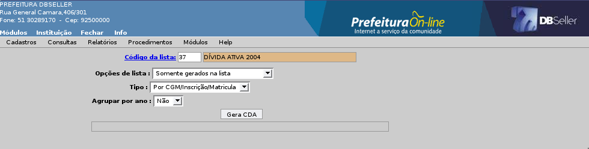

Figura 05
Índice
Documento / Procedência – CDA 4
Cancelamento Dívida Individual 29
MÓDULO DÍVIDA ATIVA
O módulo dívida ativa tem como objetivo formalizar a inscrição em dívida, planejar e coordenar a cobrança dos débitos municipais, tributários e não tributários, vencidos e não pagos e emitir a CDA para cobrança judicial.
Nesse menu é cadastrado a inclusão manual de uma dívida ativa, cujo débito não tenha sido lançado pelos procedimentos automatizados do sistema (Cálculo de IPTU, ISSQN, Taxas, Diversos). Para incluir uma dívida, é necessário saber a origem para identificar em qual procedência enquadrar, pois é essa informação que vai possibilitar a identificação sobre do que que se trata o débito, além do exercício de competência e a data de vencimento.
A inclusão manual permite apenas incluir registro a registro, para um CGM, matrícula ou inscrição. Descrição dos campos e modelo de cadastro conforme Figura 01.
Código da Dívida: Gera o código automaticamente.
CGM: Busca o código do CGM preenchido na ABA anterior.
Data de Inscrição: Preencher a data de inscrição em Dívida Ativa, por padrão busca a data do sistema.
Exercício: Preencher o exercício da dívida, por padrão busca o exercício atual.
Data de Operação: Preencher a data para operação do débito na Dívida.
Data de Vencimento: Preencher a data de vencimento do débito na Dívida.
Procedência: Selecionar a procedência que o débito será incluso em dívida onde a procedência está ligada a uma receita.
Tipo de Débito: Selecionar o tipo de débito que será incluso na dívida. Na seleção busca apenas os tipos do Grupo de Débito 5 (Dívida Ativa).
Valor Histórico: Preencher o campo valor histórico e clicar no botão calcular para calcular a correção e preencher o campo valor automático.
Valor: Busca o valor do campo preenchido ao clicar no botão calcular, permitindo ser alterado pelo usuário.
Parcela: Preencher o número da parcela que será inserido o débito na dívida.
Livro: Preencher o número do livro da dívida quando for alteração.
Folha: Preencher o número da Folha quando for alteração.
Observações: Preencher as observações referente ao débito.
Figura
01
Permite a alteração de todos os campos, menos o CGM da Dívida. Pode alterar dívida importada pela rotina de importação de Dívida Ativa e ISSQN Variável.
Permite excluir uma Dívida Ativa que não estiver vinculada a uma CDA ou Parcelada.
Nesse menu é cadastrado a procedência do débito, esse cadastro é o vinculo do débito que será importado para dívida e a receita de onde a dívida procede. A procedência é vinculada a receita na contabilidade, então ao pagar um débito com essa procedência o pagamento irá para a receita. A procedência que decide se o débito será tributário ou não. Deve ser preenchido o nome abreviado para os relatórios gerenciais.
Descrição dos campos e modelo de cadastro conforme Figura 02.
Código: O campo é gerado automático.
Descrição Abreviada: Preencher o nome abreviado da procedência, para emissão dos relatórios.
Descrição Completa: Preencher o nome completo da procedência.
Receita de Dívida: Preencher o código da receita na qual o débito será enviado para dívida.
Histórico de Cálculo: Preencher o código do histórico de cálculo ou clicar no link para pesquisar.
Tributada: Permite selecionar se a procedência será tributada.
Receita de Parcelamento: Preencher o código receita na qual o débito será enviado ao fazer o parcelamento.
Figura
02
Permite alterar os campos: Descrição Abreviada, Descrição Completa, Receita, Histórico de Cálculo, Tributada e Receita Reduzida.
Permite a exclusão quando a procedência não estiver vinculada e nenhuma dívida do sistema.
Nesse menu é cadastro a procedência com o documento, é utilizado quando é gerado um CDA ela pega o texto do documento vinculado a procedência da dívida. Esse documento busca a fundamentação legal do débito para aquela procedência. O documento padrão da fundamentação legal Tributária é 1015 e a Não Tributária 1018. Descrição dos campos e modelo de cadastro conforme Figura 03.
Procedência: Preencher o código da procedência ou clicar no link para pesquisar.
Documento: Preencher o código do documento ou clicar no link para pesquisar.
Figura
03
Permite a alteração do documento no cadastro.
É Permitido excluir o cadastro do vinculo, sem qualquer restrição.
Nesse menu é cadastrado os tipos de débito do parcelamento vinculando ao grupo de débito de origem, configurando assim qual grupo ao fazer um parcelamento na CGF irá para o tipo de débito escolhido.
Descrição dos campos e modelo de cadastro conforme Figura 04.
Figura 04
É feita a consulta financeira dos débitos dos contribuintes , a descrição dessa consulta está no Módulo Arrecadação, conforme Figura 05.
Figura
05
Na consulta da dívida mostra todos os dados cadastrais e financeiros. Ao buscar por contribuinte (CGM, Matricula ou Inscrição) o sistema trás uma pesquisa com todas as dívidas referente a opção de consulta feita. Ao pesquisar por (Dívida, Certidão e Parcelamento) busca diretamente a tela de consulta.
Descrição dos campos e modelo de cadastro conforme Figura 06 e 07.
Figura
06
Figura
07
Emite o Termo de Parcelamento para os parcelamentos em abertos no sistema, assim pode ser reemitido o termo no sistema. Descrição dos campos e modelo de relatório conforme Figura 08.
Parcelamento: Preencher o código do parcelamento ou clicar no link para pesquisar.
Figura 08
Na Figura 09 mostra um modelo de Termo de Parcelamento emitido no DBPortal.

Figura
09
Emite um relatório das CDAs geradas pelo sistema permitindo o usuário controlar as CDAs por período emitindo dois relatórios o completo e resumido. Descrição dos campos e modelo do cadastro conforme Figura 10.
Certidão: Permite escolher entre as certidões de Dívida Ativa, Parcelamento ou todas.
Intervalo da Data: Preencher o intervalo da data de criação da CDA(s).
Tipo: Permite emitir dois relatórios como Resumido que emite um resumo por inicial e seu tipo o Completo emite uma quebra por certidão buscando as dívidas vinculada a ela e seu código de arrecadação (NUMPRE).
Iniciais: Permite selecionar se a certidão possui Inicial do Foro no sistema.
Figura 10
Na Figura 11 mostra um modelo de relatório de certidão Resumido emitido no DBPortal.
Figura
11
Na Figura 12 mostra um modelo de relatório de certidão Completo emitido no DBPortal.
Figura
12
Emite o livro geral da Dívida Ativa com todos os dados financeiro dos contribuintes que foram importados para dívida no exercício. Com o número do livro e das páginas. Descrição dos campos e modelo de cadastro conforme Figura 13.
Tipo: Permite emitir um Livro resumido ou completo.
Complementar: Permite selecionar a emissão de um livro complementar ou um novo.
Número do Livro: Busca o número seqüencial mais 01 (um) depois do último livro gerado.
Data para Correção: Preencher a data de correção dos débitos no livro.
Figura
13
Emite uma lista com os dados das CDAs Anuladas no sistemas, permitindo o usuário saber quantas foram anuladas em um determinado período. Descrição dos campos e modelo do cadastro conforme Figura 15.
CDA: Permite selecionar uma de dívida e parcelamento.
Período: Preencher a data inicial e final do intervalo que se quer emitir a certidão.
Exercício: Preencher o intervalo dos exercícios para emissão da certidão.
Figura
15
Na Figura 16 mostra um modelo de relatório de CDA Anuladas emitida no DBPortal.
Figura
16
Esse relatório emite todas as dívidas prescritas por um determinado, podendo emitir individualmente por contribuinte permitindo saber quais dívidas foram prescritas para ele. Esse relatório é um dos pedidos pela contabilidade para dados sobre renuncia de receita na instituição. Descrição dos campos e modelo do cadastro conforme Figura 17.
CGM: Preencher o CGM ou clicar no link para pesquisar.
Matricula: Preencher o Matricula ou clicar no link para pesquisar.
Inscrição: Preencher o Inscrição ou clicar no link para pesquisar.
Data Inicial / Final: Preencher a data inicial e final da prescrição do débito.
Tipo: Permite selecionar um relatório completo ou resumido.
Ordem: Permite ordenar por data, CGM, matricula ou inscrição.
Histórico: Permite emitir o histórico de cada prescrição.
Figura
17
Na Figura 18 mostra um modelo de relatório de Prescrição Completo emitida no DBPortal.
Figura
18
Na Figura 19 mostra um modelo de relatório de Prescrição Resumido emitida no DBPortal.
Figura
19
Nesse menu reemite as certidões de dívida e parcelamento do sistema.
Emite as CDA(s) referente a uma Dívida Ativa, podem ser geradas por um intervalo de certidão, valores ou data de emissão. A CDA possui como padrão o documento 1008, ao emitir uma CDA com fundamentação legal Tributária a seqüencia dos parágrafos seguem a ordem (1008-1, 1015-2, 1008-3, 1008-4, 1008-5) para a fundamentação Não Tributária a ordem (1008-1, 1018-2, 1018-3, 1018-4, 1018-5). Descrição dos campos e modelo do cadastro conforme Figura 20.
Intervalo de Certidão: Preencher o intervalo das CDA(s) para reemissão.
Faixa de Valores: Preencher o intervalo de valores quando quer emitir as CDA(s) em uma faixa de valores.
Data de Emissão: Preencher a data de emissão das CDA(s) para emissão. Campo Opcional.
Ordenar: Permite ordenar por certidão ou nome.
Reemissão: Permite reemitir sim ou não.
Totaliza por Exercício: Permite totalizar uma certidão por exercício.
Endereço: Permite emitir o endereço de origem do débito ou do CGM do responsável.
Figura
20
Emite as CDA(s) referente a um parcelamento, podem ser geradas por um intervalo de certidão e por valores. Permitindo o usuário emitir todas as CDA(s) de uma determinada seqüencia. Ex: 'Intervalo de Certidão': 550 à 1250. Descrição dos campos e modelo do cadastro conforme Figura 21.
Intervalo de Certidão: Preencher o intervalo das CDA(s) para reemissão.
Faixa de Valores: Preencher o intervalo de valores quando quer emitir as CDA(s) em uma faixa de valores.
Reemissão: Permite emitir a CDA de parcelamento novamente.
Figura
21
Na Figura 22 mostra um modelo de CDA de Parcelamento emitida no DBPortal.
Figura
22
Nesse menu emite relatórios referente a dívida ativa do sistema, podendo controlar toda a dívida do município.
Emite um relatório financeiro da dívida ativa selecionando por exercício dela, listando por contribuinte que está selecionado no campo Tipo. Descrição dos campos e modelo do cadastro conforme Figura 23.
Escolher os Anos: Marcar os exercícios que se quer emitir no relatório.
Débitos Posteriores: Emite débitos posteriores aos exercícios selecionados.
Modelo: Permite emitir um relatório sintético ou analítico.
Intervalo de Valores: Permite emitir o relatório por um determinado intervalo de valores da dívida.
Tipo: Permite emitir o relatório por (Nome, Matricula e Inscrição).
Agrupar: Permite agrupar o relatório por exercício ou procedência.
Registro à Listar: Permite listar uma quantidade registro especificada nesse campo.
Ordenar: Permite ordenar por nome, numérico ou valor. (Crescente ou Decrescente).
Procedência: Permite selecionar as procedência da dívida.
Figura
23
Na Figura 24 mostra um modelo de relatório de Dívida Exercício emitido no DBPortal.
Figura
24
Emite um relatório que busca as dívidas e parcelamentos referente a uma procedência. Gerando um relatório analítico da Dívida / Procedência. Descrição dos campos e modelo do cadastro conforme Figura 25.
Opção: com Procedência ou sem Procedência.
Seleção: Preencher o código da procedência ou clicar no link para pesquisar e lançar.
Escolher os Anos: Marcar os exercícios que se quer emitir no relatório.
Figura
25
Na Figura 26 mostra um modelo de relatório de Dívida Contribuinte emitido no DBPortal.
Figura
26
Nesse menu emite relatórios referente a posição da dívida ativa no sistema.
Emite um relatório da procedência por exercício separando por dívida Tributária e Não Tributária. Esse relatório emite os dados da tabela débitos, mostrando no campo Data da Débito a ultima data de geração da tabela. Descrição dos campos e modelo do cadastro conforme Figura 27.
Data Débito: Selecionar a data de geração da tabela débitos.
Exercícios: Marcar os exercícios da dívida.
Figura
27
Na Figura 28 mostra um modelo do relatório Dívida Exercício / Procedência emitido no DBPortal.
Figura
28
Emite um relatório financeiro da posição da Dívida Ativa por contribuinte, gerando um resumo da dívida. Descrição dos campos e modelo do cadastro conforme Figura 29.
CGM: Preencher o código do CGM ou clicar no link para pesquisar.
Matrícula: Preencher o código do matricula ou clicar no link para pesquisar.
Inscrição: Preencher o código do inscrição ou clicar no link para pesquisar.
Figura
29
Na Figura 30 mostra um modelo de relatório de Contribuinte emitido no DBPortal.
Figura
30
Nesse menu emite relatórios referente aos parcelamentos de dívida ativa feito no sistema.
Emite um relatório das posições financeiras dos parcelamentos para o usuário saber quantas parcelas estão vencidas e o valor que falta ser paga. Descrição dos campos e modelo do cadastro conforme Figura 31.
ABA Tipo de Débito
Tipo de Débito: Preencher o código do tipo de débito ou clicar no link para pesquisar.
Intervalo da Data: Preencher a data inicial e final de emissão dos parcelamentos.
Quantidade de Parcelas Atraso: Preencher o intervalo da quantidade de parcelas em atrasos.
Número de Parcelas Atraso: Preencher o intervalo do número de parcelas em atrasos.
Modelo: Permite selecionar três tipos como Relatório e Gráfico, Relatório ou Gráfico.
Figura
31
ABA Regra de Parcelamento
Código: Selecionar o código da regra de parcelamento ou clicar no link para pesquisar.

Figura
32
Na Figura 33 mostra um modelo de relatório de Posição do Parcelamento emitido no DBPortal.
Figura
33
Emite um relatório com os dados gerais do parcelamento vinculando a situação do parcelamento no sistema. Descrição dos campos e modelo do cadastro conforme Figura 34.
Período: Preencher a data inicial e final do lançamento do parcelamento.
Situação: Selecionar a situação do parcelamento no sistema.
Resumido: Permite emitir um relatório resumido ou completo.
Figura
34
Na Figura 35 mostra um modelo de relatório da situação do Parcelamento emitido no DBPortal.

Figura
35
Emite um recibo com uma taxa referente a uma receita para pagamentos avulso no DBPortal. Gera um código de arrecadação para o recibo que possui vinculo com o CGM, Matricula ou Inscrição. Descrição dos campos e modelo do cadastro conforme Figura 36.
CGM: Preencher o código do CGM ou clicar no link para pesquisar.
Matrícula: Preencher o código do Matricula ou clicar no link para pesquisar.
Inscrição: Preencher o código do Inscrição ou clicar no link para pesquisar.
Obs: Os campos acima do contribuinte deve ser preenchido somente um por recibo.
Processo: Preencher o código do processo ou clicar no link para pesquisar.
Receita: Preencher o código da receita ou clicar no link para pesquisar.
Taxa: Preencher o valor do recibo para pagamento ou clicar em Taxa para pesquisar. Depois clicar no botão Gravar, para adicionar os dados.
Histórico: Descrever alguma informação para emitir no recibo.
Data de Vencimento: Colocar a data de vencimento para os débitos do recibo.
Figura
36
Nesse menu é feita a prescrição da dívida onde consiste na perda do direito de promoção da ação de execução fiscal a ser proposta pelo Fisco, no prazo de cinco anos da constituição definitiva do crédito tributário. O crédito torna-se definitivo com o lançamento do débito ou com a decisão administrativa da qual não caiba mais recurso.
Nesse procedimento é feita a prescrição dos débitos por contribuinte, ao selecionar ele o sistema busca todos débitos referente ao grupo de débito 5 – Dívida Ativa, e permitindo ser prescrito por uma faixa de valores ou exercício. Descrição dos campos e modelo do cadastro conforme Figura 37.
CGM: Preencher o código do CGM ou clicar no link para pesquisar.
Matrícula: Preencher o código do Matricula ou clicar no link para pesquisar.
Inscrição: Preencher o código do Inscrição ou clicar no link para pesquisar.
Obs: Os campos acima do contribuinte deve ser preenchido somente um por prescrição.
Prescrever Débitos Notificados: Permite selecionar apenas os débitos que não foram notificados pelo sistema.
Figura
37
Faixa de Valores: Preencher a faixa de valores que se quer prescrever, valor inicial e final. Ex: Quero prescrever os débitos de R$ 1,000,00 até 5,000,00.
Observações: Colocar informações sobre a prescrição que sai como um histórico no relatório de prescrição.
Exercícios: Busca todos os exercícios que possuem débitos, o usuário pode selecionar os exercícios que se quer prescrever e clicar em “Filtrar com os dados selecionados” para buscar os débitos do exercício selecionado abaixo na seleção.
Figura
38
Nesse procedimento é feito a prescrição a partir da leitura dos registros de uma Lista de débitos gerada no Módulo Notificações, será prescrito somente o grupo de débito 5 – Dívida Ativa, se um contribuinte da lista for diferente do tipo 5 a rotina não prescreve e emite um relatório dos contribuinte que não estão de acordo para a prescrição. O usuário deve atualizar o contribuinte ou gerar outra lista de débito.
Os débitos que são cancelados por prescrição, são mostrados na CGF em um atalho específico chamado “ Débitos Prescritos”.
Descrição dos campos e modelo do cadastro conforme Figura 39.
Lista: Preencher o código do lista ou clicar no link para pesquisar.
Prescrever Débitos Notificados: Permite selecionar se quer prescrever todo a lista independente se tiver notificação para os débitos. Se não quer prescreve esses débitos e no final emite um relatório dos débitos que não foram prescritos.
Observações: Preencher alguma observação sobre a prescrição, assim permite emitir histórico da prescrição no relatório.
Figura
39
No menu de Certidão de Dívida Ativa (CDA) onde é título executivo extrajudicial que permite à Fazenda Pública ingressar com a competente execução fiscal. A Certidão expedida pelo DBPortal, atende às exigências formais impostas pelo Código Tributário Nacional e pela Lei 6830/80 (Lei de execução fiscal).
A inclusão de CDA individual é feita pela Consulta Geral Financeira.
Nesse procedimento é feita a inclusão das CDA por uma Lista de Débito gerada no Módulo Notificações, podendo ser agrupar por exercício uma CDA. Descrição dos campos e modelo do cadastro conforme Figura 40.
Lista: Preencher o código da lista ou clicar no link para pesquisar.
Opção de Lista: Permite selecionar as opções para gerar as CDAs com lista notificada ou não.
Tipo: Permite o usuário gera as CDAs somente por CGM ou por (CGM,Matricula e Inscrição).
Agrupar: Permite agrupa os débitos por exercício e gera uma CDA por ano.

Figura
40
Nesse procedimento é feito o cancelamento total de todas as CDA dentro do um intervalo de CDA preenchido. Obs: As CDA não podem estar vincula a uma Inicial do Foro senão não será canceladas. Descrição dos campos e modelo do cadastro conforme Figura 41.
Intervalo CDA: Preencher o código da CDA inicial e o código da CDA final cancelando todas as CDA(s) dentro desse período. Clicar em processar.
Figura
41
Nesse procedimento permite cancelar parte da dívida de uma CDA. Obs: Deve ser emitido uma nova Inicial Foro referente aquela CDA anulada parcialmente. Descrição dos campos e modelo do cadastro conforme Figura 42 e 43.
CDA: Preencher o código do CDA ou clicar no link para pesquisar, e clicar no botão Processar.
Débitos: Marcar os débitos que se quer cancelar, é mostrado os débitos por dívida e clicar no botão Cancelar. Obs: Não permite cancelar todos os débitos deve permanecer no mínimo um débito pois está rotina cancela parcialmente.
Figura
42
Figura
43
Nesse menu a importação de dívida é o procedimento pelo qual se transporta para dívida ativa os débitos vencidos e não pagos após expirado o prazo para pagamento e pode ser realizada de três formas.
Nesse procedimento é feito a importação do débito para dívida ativa individualmente. Deve ser selecionado a origem e o destino do débito para importação para Dívida Ativa. Abaixo busca os débito para importação referente a opção escolhida na origem do débito. Descrição dos campos e modelo do cadastro conforme Figura 44 e 45.
CGM: Preencher o código do CGM ou clicar no link para pesquisar.
Matricula: Preencher o código do Matricula ou clicar no link para pesquisar.
Inscrição: Preencher o código do Inscrição ou clicar no link para pesquisar.
Obs: Os campos acima do contribuinte deve ser preenchido somente um por importação.
Figura
44
Tipo de Origem: Busca os tipos de débito que podem ser enviados para a Dívida Ativa.
Tipo de Destino: Selecionar o tipo de débito que deve ser importado para Dívida Ativa, a seleção busca todos do grupo de débito 5 – Dívida Ativa.
Código de Arrecadação: Busca os débitos pelo código da arrecadação (NUMPRE) de acordo com a seleção do campo Tipo de Origem selecionado acima, e clicar em processar.
Figura
45
Nesse procedimento é feito a importação geral dos débitos de IPTU, ISSQN Fixo, Vistoria, Alvará, Auto de Infração e Diversos para importação da Dívida Ativa do exercício atual. Os débitos de ISSQN Variável não são importados por essa rotina. Descrição dos campos e modelo do cadastro conforme Figura 46 e 47.
Tipo de Origem: Selecionar a origem do débito para importar para a Dívida Ativa.
Tipo de Destino: Selecionar o destino do débito para importar para a Dívida Ativa.
Débitos Importados: Permite o usuário escolher opções de importação para os débitos. Todas Vencidas: Busca todos os débitos que estão vencidos do tipo de débito de origem. Parcialmente Vencidas: Busca as parcialmente vencidas com o mesmo código de arrecadação . Todas Parceladas: Busca todas as parcelas do débito de origem, não olhando a data de vencimentos das parcelas.
Parcelas Vencidas: Preencher a data final das parcelas vencidas.
Unifica Débitos (numpre, Receita): Marcar se quiser unificar os débitos pelo código de arrecadação e receita.
Figura
46
Na outra tela selecionar a procedência que se quer importar para Dívida Ativa.
Figura
47
Nesse procedimento é feito a importação para Dívida Ativa. O DBPortal busca todas os débitos de ISSQN Variável que estiver com valores lançados, débitos sem valores não podem ser exportado para dívida. Descrição dos campos e modelo do cadastro conforme Figura 48.
CGM: Preencher o código do CGM ou clicar no link para pesquisar.
Inscrição: Preencher o código do Inscrição ou clicar no link para pesquisar.
Obs: Os campos acima do contribuinte deve ser preenchido somente um por importação.

Figura
48
Nesse procedimento é feito o cancelamento da importação do débito para dívida ativa por contribuinte. Ao selecionar o contribuinte busca apenas os código de arrecadação que estão em aberto e não estão cancelados e nem pagos. Descrição dos campos e modelo do cadastro conforme Figura 49 e 50.
CGM: Preencher o código do CGM ou clicar no link para pesquisar.
Matrícula: Preencher o código do Matricula ou clicar no link para pesquisar.
Inscrição: Preencher o código do Inscrição ou clicar no link para pesquisar.
Obs: Os campos acima do contribuinte deve ser preenchido somente um por cancelamento.
Figura 49
Código de Arrecadação: Busca os débitos pelo código da arrecadação (NUMPRE) de acordo com a seleção do campo Tipo de Origem selecionado acima, e clicar em processar.
Figura
50
Nesse procedimento é feito o cancelamento de ISSQN Variável por contribuinte. Ao selecionar o contribuinte busca apenas os código de arrecadação que estão em aberto e não estão cancelados e nem pagos. Descrição dos campos e modelo do cadastro conforme Figura 51 e 52.
Inscrição: Preencher o código do Inscrição ou clicar no link para pesquisar.
Figura 51
Código de Arrecadação: Busca os débitos pelo código da arrecadação (NUMPRE) de acordo com a seleção do campo Tipo de Origem selecionado acima, e clicar em processar.
Figura
52
Nesse procedimento é feito o processamento do Livro da Dívida no qual o sistema codifica cada registro inscrito com um código de livro a folha a qual foi inserida, ou seja, quando imprime-se o livro, cada página é numerada seqüencialmente. Essa informação é requisito indispensável na CDA, possibilitando a identificação do débito ao examinar o livro.
O processamento do do livro subdivide-se em dois modos:
1 – Processamento do livro – Nesse caso o sistema gera um novo livro para os registros do exercício selecionado, iniciando a partir da página 1
2 – Livro complementar – Nesse caso o sistema insere os registros do exercício selecionado no livro escolhido a partir da última página que esse livro possua. Essa opção é utilizada para gerar livro e folha para os registros importados para dívida após ter sido efetuado o processamento do livro mencionado no item 1.
Descrição dos campos e modelo do cadastro conforme Figura 53.
Complementar: Permite o usuário se quer gerar um livro novo ou complementar.
Exercício da Dívida: Preencher o exercício que deve ser gerado o Livro de Dívida Ativa.
Período de Inscrição: Preencher o período de inscrição em Dívida Ativa no município.
Última Página: Preencher a última página do livro da Dívida.
Número do Livro: Preencher o número do Livro que vai ser gerado.
Procedência: Preencher o código da Procedência ou clicar no link para pesquisar.
Figura
53
Nesse menu é cadastrado os textos referente a (Certidão, Termo de Parcelamento e Petição Inicial) . A Certidão pode ser (Positiva, Negativa, Regular e Baixa), podendo configurar os textos para emissão.
Nesse menu é cadastrado os textos referentes as Assinaturas como: Secretário da Fazenda, Prefeito e Chefe da Dívida. Separando as assinaturas por sistemas.
Nesse procedimento busca os menus que os usuário que está logado possui permissão na Consulta Geral Financeira como (Permite que usuário Cancelar Débitos, Permite que o usuário Efetue o Parcelamento, Permite que o usuário Gerar CDA, Permite que o usuário Justifique Débitos, Permite o usuário Anular o Parcelamento.).
|
DBSeller Serviços de Informática Ltda. – www.dbseller.com.br Rua General Câmara, 406/301 – Porto Alegre/RS – Fone: (51) 3076-5101 |
|